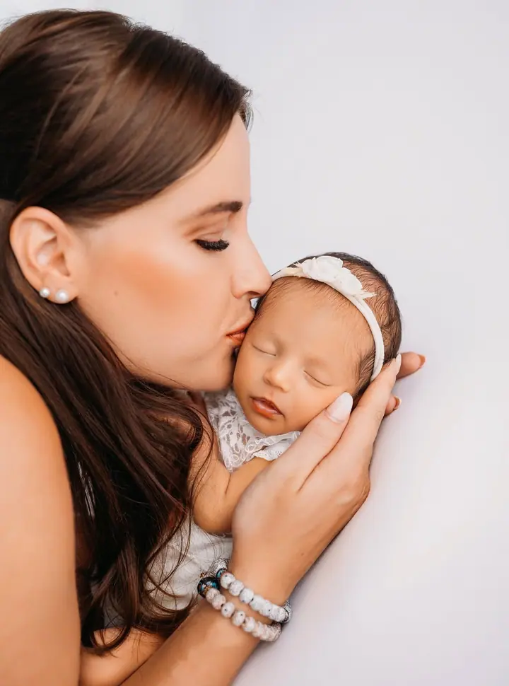
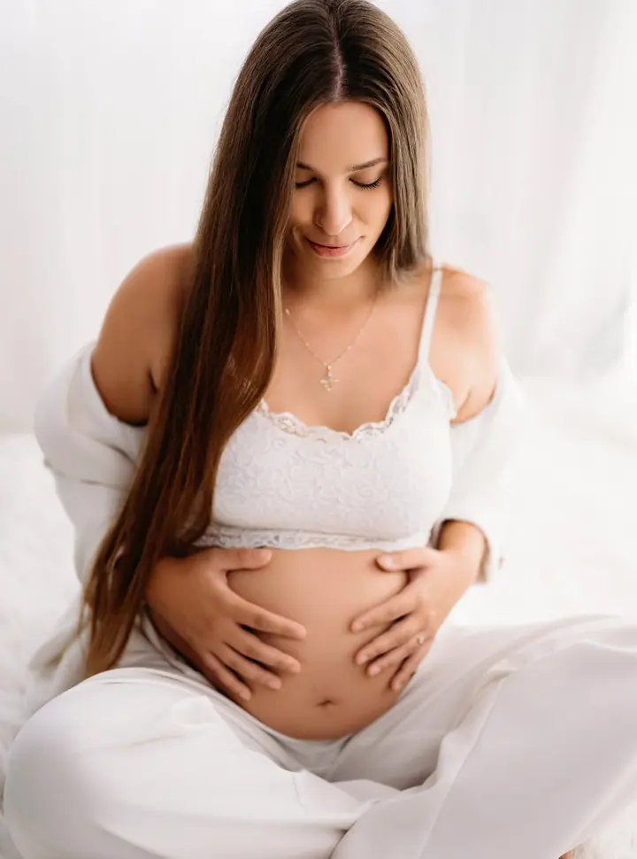
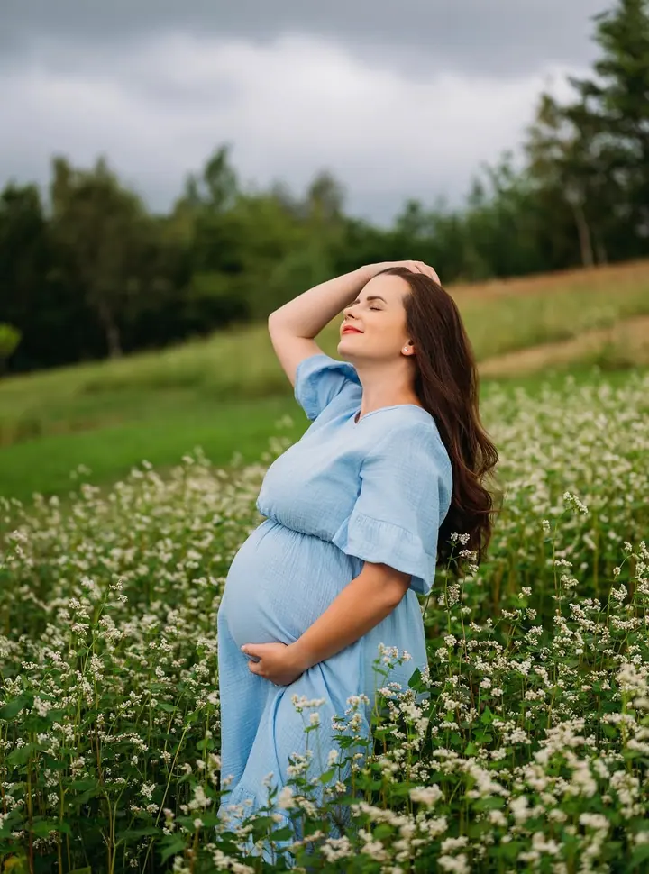

Newborn focení
Miminka fotím ve věku 10 dní až 3 týdny, ale i ve 4 týdnech. Fotit se můžou i rodiče a sourozenci a oblečky i rekvizity pro miminko mám připravené v ateliéru.

Jmenuji se Lenka Juračková a fotím novorozená miminka, budoucí maminky i celé rodiny. Ateliér mám ve Václavově u Bruntálu, ale ráda s vámi vyrazím i ven do okolí Bruntálska.
Rezervovat termínFotím newborn, rodinné a těhotenské fotky a také jiná focení. Některá probíhají v ateliéru, jiná venku v přírodě, záleží na tom, co se k vám a k ročnímu období hodí víc.


U miminek nespěchám. Newborn focení trvá dvě až tři a půl hodiny, aby byl čas na krmení, uspávání i přestávky. Oblečky a rekvizity mám připravené v ateliéru, takže nemusíte nic shánět. Na fotky můžou přijít i rodiče a sourozenci.
Každou vybranou fotku pečlivě upravuji sama, proto neupravené snímky nepředávám. Budu se na vás těšit.
Co fotím
Miminka fotím ve věku 10 dní až 3 týdny, ale i ve 4 týdnech. Fotit se můžou i rodiče a sourozenci a oblečky i rekvizity pro miminko mám připravené v ateliéru.
Fotím budoucí maminky samotné, s partnerem i s dětmi. V ateliéru nebo venku v přírodě.
Focení rodičů s dětmi a také velké rodinné focení s prarodiči nebo sourozenci a jejich dětmi.
Venkovní focení probíhá v okolí Bruntálska a přizpůsobuji ho ročnímu období.
Postup
Napište mi nebo zavolejte a domluvíme se, jaké focení chcete a jestli bude v ateliéru, nebo venku. U miminek je ideální domluvit se ještě před porodem.
Rodinné a těhotenské focení trvá zhruba 1,5 až 2 hodiny, newborn 2 až 3,5 hodiny. Oblečky a rekvizity pro miminka mám v ateliéru.
Po focení si z náhledů vyberete fotky, které chcete upravit. V ceně je 10 upravených fotek, každá další je za 200 Kč.
Upravené fotky vám pošlu v elektronické podobě do 4 až 8 týdnů od chvíle, kdy mi pošlete svůj výběr. Záleží na tom, kolik zrovna mám práce.
Otázky
Miminka fotím nejčastěji ve věku 10 dní až 3 týdny, ale vyfotit se dají i čtyřtýdenní miminka.
V ceně každého focení je 10 upravených fotek v elektronické podobě. Každá další fotka navíc stojí 200 Kč.
Ne, neupravené fotografie neposkytuji. Dostanete jen fotky, které jsem pro vás upravila.
Cena je splatná v den focení, buď v hotovosti, nebo převodem na účet přes QR kód.